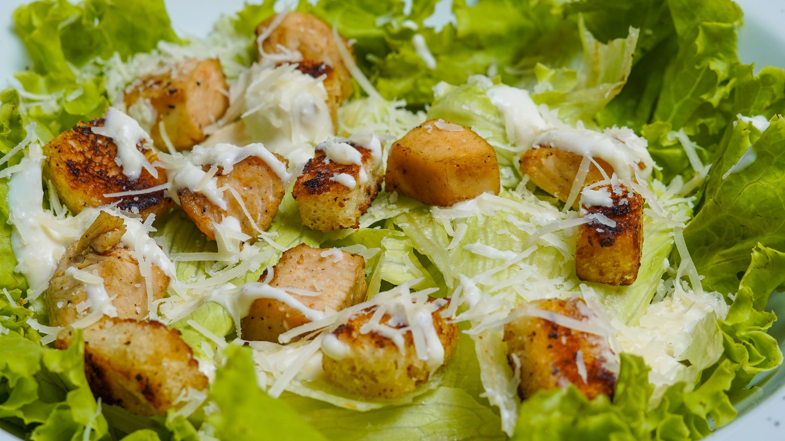

Caesar Salad

Finished caesar salad will look something like this.
Simple caesar salad recipe, this elegant salad is said to be from 1924. An Italian-born restaurateur Caesar Cardini, during the Prohibition era, moved his restaurant from San Diego in California to Tijuana, Mexico, just so he could consume and serve alcohol.
His restaurant was known as Caesar's, and as most good recipes this salad came to be when on a busy holiday weekend, Cardini was out of ingredients for his
insalata mista. He assembled what he could from nearby shops and his cupboards: romaine lettuce, Parmesan cheese, lemons, bread cubes, olive oil, eggs and Worcestershire sauce.
Ingredients:
Salad
- Romaine lettuce - 400g
- Parmigiano Reggiano (or regular Parmesan) - 50g - shaved
Croutons
- Stale bread - 150g
- Fine salt - to taste
- Extra virgin olive oil - to taste
- Black Pepper - to taste
Dressing
- Extra virgin olive oil - 4 tbsp (50g)
- Lemon juice - 2 tsp (10g)
- Dijon mustard - 1 tbsp (20g)
- Worcestershire sauce - 1 tsp
- Black Pepper - to taste
- Egg yolk - 1
- Lemon peel - 1
- Anchovies in oil - 3 fillets
- Fine salt - to taste
- Prepare the lettuce: separate the leaves from the stalk.
- Roughly chop the leaves, rinse, and dry them, store in the refrigerator.
- Croutons: cut the bread in irregular cubes, set them in a pan with a drizzle of oil, add salt and pepper, set over medium heat for about 5 minutes or until golden.
Then set the croutons aside.
- Obtain the flakes from the Parmigiano Reggiano DPO with the help of a potato peeler, also set them aside.
- Dressing: in a bowl, put the anchovy fillets, salt, pepper, and the grated lemon zest.
Add the mustard and crush everything with a fork. Add the yolk and the lemon juice, mix until well incorporated.
Now whisk and pour the oil in a thin stream while beating the mixture to emulsify it. Finally add the Worcestershire sauce and mix again to blend it.
- Transfer the lettuce leaves from the refrigerator to a large bowl, then add the bread croutons and the Parmigiano Reggiano (or regular Parmesan) flakes.
Pour the dressing, and mix well to evenly dress the salad.
Home